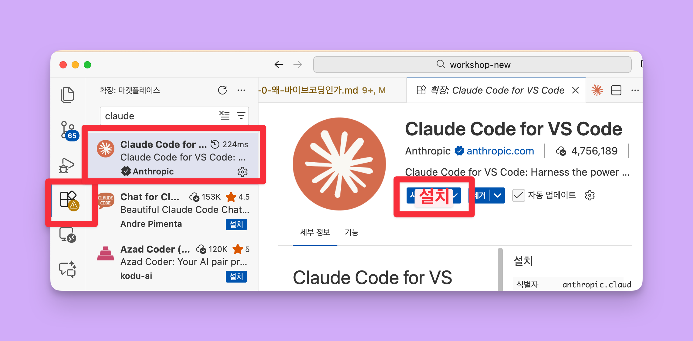
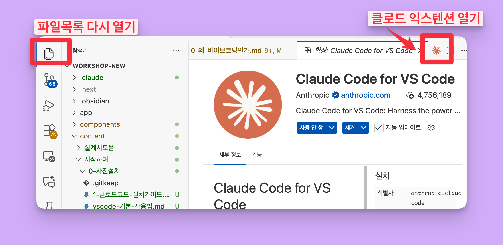
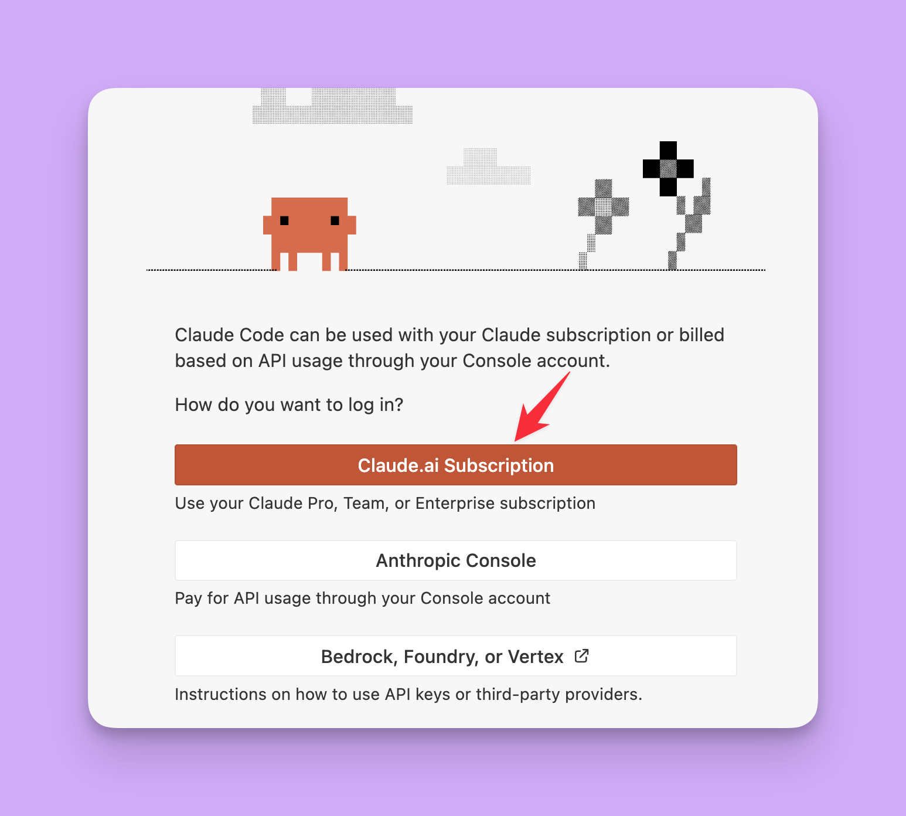
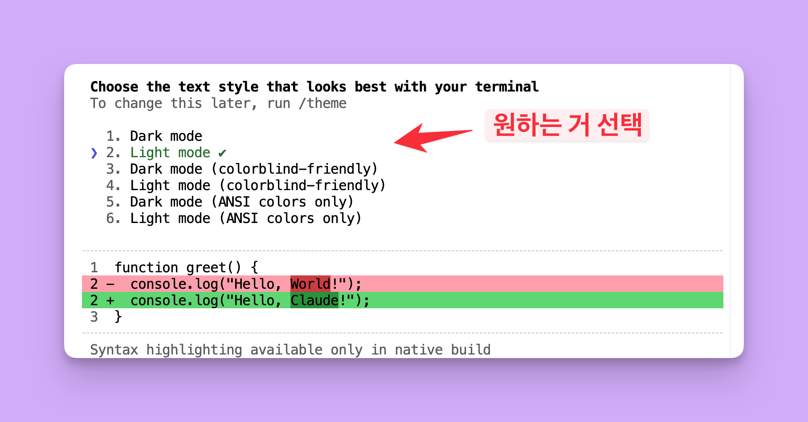
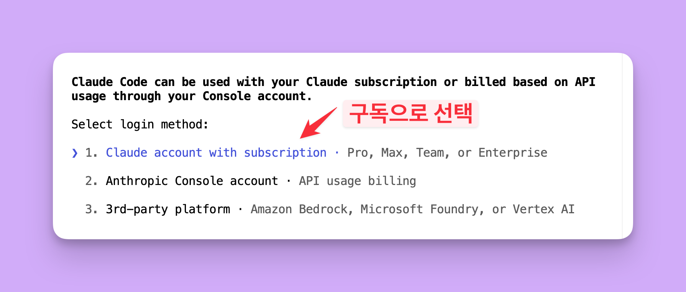

아래에서 내 운영체제를 선택하세요.
Step 1. 계정 만들기
아래 사이트에 가입해주세요. 이미 있으면 다음으로 넘어가세요.
| 서비스 | 용도 | 가입 방법 |
|---|---|---|
| GitHub | 코드 저장 & 공유 | Sign up → Continue with Google |
| Vercel | 웹사이트 배포 | Sign Up → Continue with GitHub |
| Claude | AI 코딩 에이전트 | 계정 생성 → Pro 구독 ($20/월) |
Google로 가입하면 비밀번호 관리가 편합니다. Vercel과 GitHub은 무료 플랜으로 충분합니다.
Step 2. VS Code 설치
코드를 보고 편집하는 작업 공간입니다. 안에 터미널(명령 창)도 내장되어 있어요.
- code.visualstudio.com/download → Mac 버전 다운로드
.dmg파일 열기 → VS Code를 Applications 폴더로 드래그- Spotlight(Cmd+Space)에서 "Visual Studio Code" 실행
- code.visualstudio.com/download → Windows 버전 다운로드
.exe파일 실행 → 설치 마법사 진행- 시작 메뉴에서 "Visual Studio Code" 실행
Step 3. Claude Extension 설치 (가장 쉬운 방법!)
💡 VS Code 안에서 채팅 패널로 Claude를 쓰는 방법입니다. 클릭 몇 번이면 끝!
설치
- VS Code 왼쪽 사이드바에서 Extensions 아이콘 클릭 (네모 4개 모양)
못 찾겠으면 단축키: Cmd + Shift + X
못 찾겠으면 단축키: Ctrl + Shift + X
- 검색창에 Claude 입력
- Anthropic 제작 확인 후 Install 클릭

Extension 열기
- 왼쪽 사이드바 파일 아이콘 클릭 (맨 위)
- 우측 상단 주황색 Claude 아이콘 클릭하여 패널 열기
단축키: Cmd+Shift+Esc
단축키: Ctrl+Shift+Esc

로그인 & 테스트
- Sign In 버튼 클릭
- 브라우저에서 Claude 계정 로그인 → 허용 클릭
- Claude 패널에
안녕하세요입력 → 응답 오면 성공!

✅ 여기까지 하면 Claude Code를 사용할 수 있어요!
아래 Step 4~6은 터미널 버전 설치입니다. Extension만으로는 안 되는 고급 기능(MCP 연결, 자동화 스크립트 등)을 위해 필요해요.
Step 4. Homebrew & Git 설치
💡 왜 필요한가요?
Claude Code 터미널 버전에서 스킬을 설치하고 공유하려면 Git이 필요합니다.
Mac에서는 Homebrew(패키지 관리자)를 먼저 설치하고, Homebrew로 Git을 설치합니다.
1. Homebrew 설치
- VS Code 상단 메뉴에서 Terminal → New Terminal 클릭
- 아래 명령어 복사 → 터미널에 붙여넣기 → Enter:
Terminal
/bin/bash -c "$(curl -fsSL https://raw.githubusercontent.com/Homebrew/install/HEAD/install.sh)"
- 비밀번호 입력 요청 → Mac 로그인 비밀번호 입력 (화면에 안 보이지만 정상)
- 설치 완료 메시지 확인
⚠️ 설치 후 아래와 같은 메시지가 나오면 그대로 복사해서 실행하세요:
터미널에 표시된 메시지 예시
==> Next steps:
- Run these commands in your terminal to add Homebrew to your PATH:
echo >> ~/.zprofile
echo 'eval "$(/opt/homebrew/bin/brew shellenv)"' >> ~/.zprofile
eval "$(/opt/homebrew/bin/brew shellenv)"
확인: brew --version
2. Git 설치
Terminal
brew install git
확인: git --version
Git 설치
- git-scm.com/download/win → 64-bit Git for Windows Setup 클릭
- .exe 파일 실행 → 모든 옵션 기본값 유지 → Next 진행
PowerShell
git --version
⚠️ 설치 후 VS Code를 완전히 종료했다가 다시 열어야 git 명령어가 인식됩니다.
Step 5. Claude Code 설치 (터미널 버전)
Extension과 별개로, 터미널에서 직접 쓰는 버전을 설치합니다.
- VS Code에서 Terminal → New Terminal (Ctrl+`)
- 명령어 입력:
Terminal
curl -fsSL https://claude.ai/install.sh | bash
- VS Code 완전히 종료 후 다시 열기
- 확인:
Terminal
claude --version
⚠️ PATH 설정이 필요하다는 메시지가 나오면:
Terminal
echo 'export PATH="$HOME/.local/bin:$PATH"' >> ~/.zshrc && source ~/.zshrc
- VS Code에서 Terminal → New Terminal (Ctrl+`)
- 명령어 입력:
PowerShell
irm https://claude.ai/install.ps1 | iex
⚠️ CMD에서는 작동하지 않습니다. 반드시 PowerShell을 사용하세요.
- VS Code 완전히 종료 후 다시 열기
- 확인:
PowerShell
claude --version
⚠️ PATH 설정이 필요하다는 메시지가 나오면:
- Win+R →
sysdm.cpl→ Enter → 고급 탭 - 환경 변수 → 사용자 변수 Path → 편집
- 새로 만들기 →
%USERPROFILE%\.local\bin과%USERPROFILE%\.claude\bin추가 - 확인 → VS Code 재시작
Step 6. Claude Code 로그인 (터미널용)
터미널에서 claude를 직접 사용하기 위한 로그인입니다. Step 3의 Extension 로그인과 별개입니다.
- 터미널 열기 (Ctrl+`) →
claude입력 → Enter - 테마 선택 → Light 또는 Dark

- 로그인 방법 → Claude account with subscription 선택

- 브라우저 자동 오픈 → Claude 계정 로그인 → 허용 클릭
- 터미널에서
안녕하세요입력 → 응답 오면 성공!
Step 7. Vercel 연동
vercel.com 로그인 → New Project → Import Git Repository → GitHub 계정 연결
나중에 GitHub에 코드를 올리면 Vercel이 자동으로 웹사이트를 배포해줍니다.
✅ 세팅 완료!
모든 설치가 끝났습니다. 다음 섹션으로 넘어가세요.
문제 해결
| 증상 | 해결 |
|---|---|
| Extension이 안 보임 | VS Code 재시작 |
claude 명령어가 안 됨 | VS Code 완전히 종료 후 재시작 |
| 브라우저 로그인 후 반응 없음 | 브라우저에서 "허용" 클릭 확인 |
| 로그인이 안 됨 | 브라우저 팝업 차단 해제 |
| 응답이 안 옴 | Claude Pro 구독 상태 확인 |
git 명령어가 안 됨 | VS Code 완전히 종료 후 재시작 또는 재설치 |